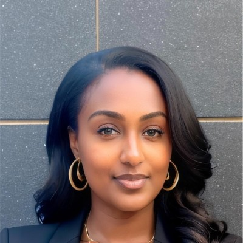

Live tool · AI enablement
AI Fluency Lab
A free 10-minute AI Fluency Check that scores four abilities and gives you a learning plan, plus the AI Readiness Toolkit for teams.
Hi, I’m Nuhamin.
Most teams have AI tools. Few have people who use them well, or the guardrails to use them safely. That’s the gap I love closing.
AI is only as safe as the people who build it and use it.

NTWhat I do
I start by finding where AI can go wrong, from security and privacy to bias and accuracy, before it hurts anyone.
Then I use frameworks like NIST AI RMF, ISO/IEC 42001 and the EU AI Act to turn those risks into simple rules people actually follow.
Finally, I help people build real confidence with AI, and I measure whether it’s working.
A little about me
I didn’t take a straight line into AI, and I’m glad. Training teams across four countries taught me how people learn. Managing operations risk taught me how decisions go wrong. Working on development programs at the Embassy of France, including programs on online gender-based violence, showed me how technology can hurt the people with the least power.
Now I bring all of that to AI. I’m finishing my master’s in cybersecurity, I research AI fluency and governance, and I translate between technical teams and leadership, in English, French or Amharic.
Right now
What I believe
People start using AI on day one. The rules have to come before the skills, so no one learns the hard way.
Good guardrails are simple, proportionate and easy to follow. If they slow everyone down, they won’t be followed.
The best AI policy fails if people don’t know how to judge AI output. That’s why I care so much about AI fluency.
Work
Live tool · AI enablement
A free 10-minute AI Fluency Check that scores four abilities and gives you a learning plan, plus the AI Readiness Toolkit for teams.
Toolkit · AI adoption
A 4-week program for small teams: skills check, session guides, a safe-use policy and a results tracker.
Research · AI governance
Six standards, including NIST AI RMF, ISO/IEC 42001 and the EU AI Act, scored on how well they cover AI agents.
Research · AI security
How AI agents could target the post-quantum cryptography supply chain, and how maintainers can spot them.
Hands-on · Cybersecurity & GRC
Vulnerability assessments mapped to NIST, HIPAA, GDPR and PCI DSS, so findings make sense to compliance teams.
Research & talks
Say hi
I’d love to hear what your team is building, or just swap ideas about AI, security and people. I’m based in the Washington, DC area and open to new roles.